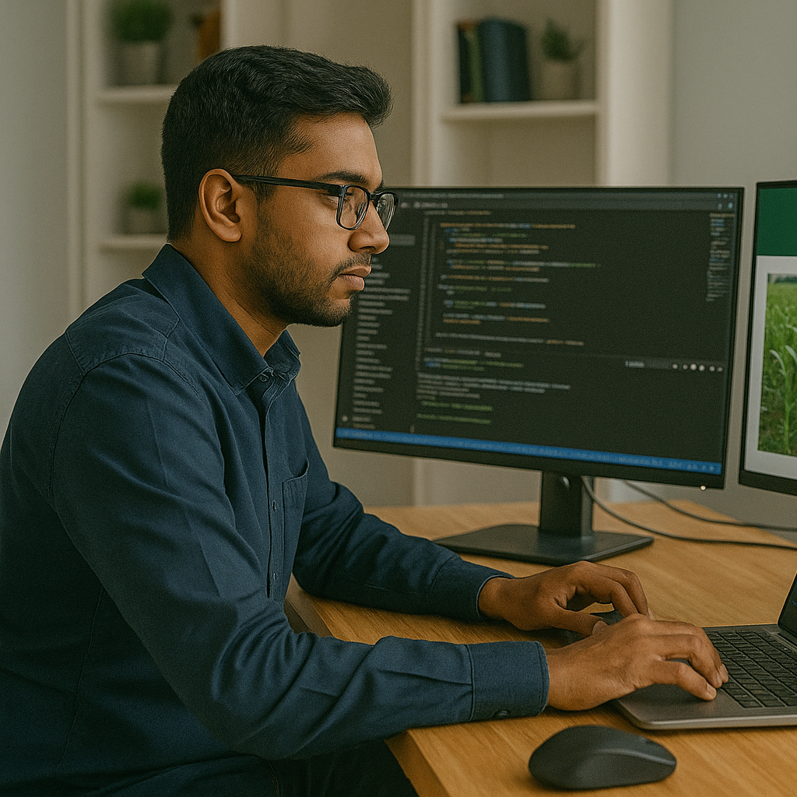

Posisi yang Dibuka

Software Engineer
Bertanggung jawab dalam pengembangan platform digital dan sistem monitoring berbasis IoT.
Penempatan: Remote / Yogyakarta
Field Agronomist
Mendampingi petani dalam implementasi teknologi AGRIGROTECH di lapangan.
Penempatan: Jawa Barat, Jawa Tengah

Customer Support
Melayani pertanyaan dan keluhan pelanggan melalui berbagai kanal komunikasi.
Penempatan: Remote